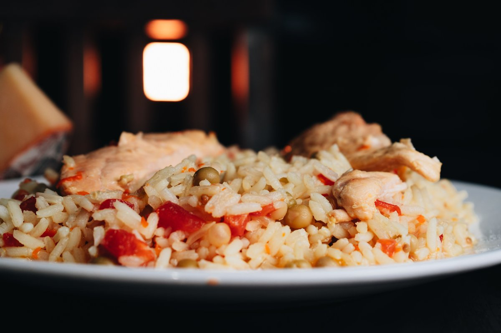
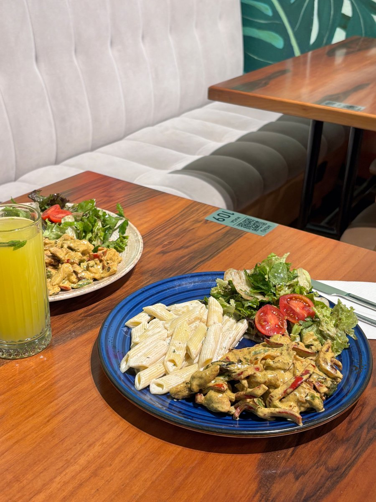

CASERO
Pollo con arroz
$7500
Los Yodalmuerzos
¡Que el sabor te acompañe!
CASERO · RICO · PRÁCTICO
Platos caseros y viandas para acompañarte durante la semana. Elegí tu favorito y conocé nuestras propuestas.
Ver el menú
LA COMUNIDAD YODA
Opiniones ficticias de ejemplo para mostrar el diseño de esta sección.
★★★★★
El pollo con arroz me resolvió el almuerzo. ¡Bien casero!
★★★★★
Los burritos veggie tienen mucho sabor. Volvería a elegirlos.
★★★★☆
La ensalada con nueces es fresca y crocante. Una buena opción.
★★★★☆
La pasta con salsa tiene mucho sabor, la volveria a pedir!!
CHARLEMOS
Lunes a viernes · 11:00 a 15:00
Zona de entrega: a definir.